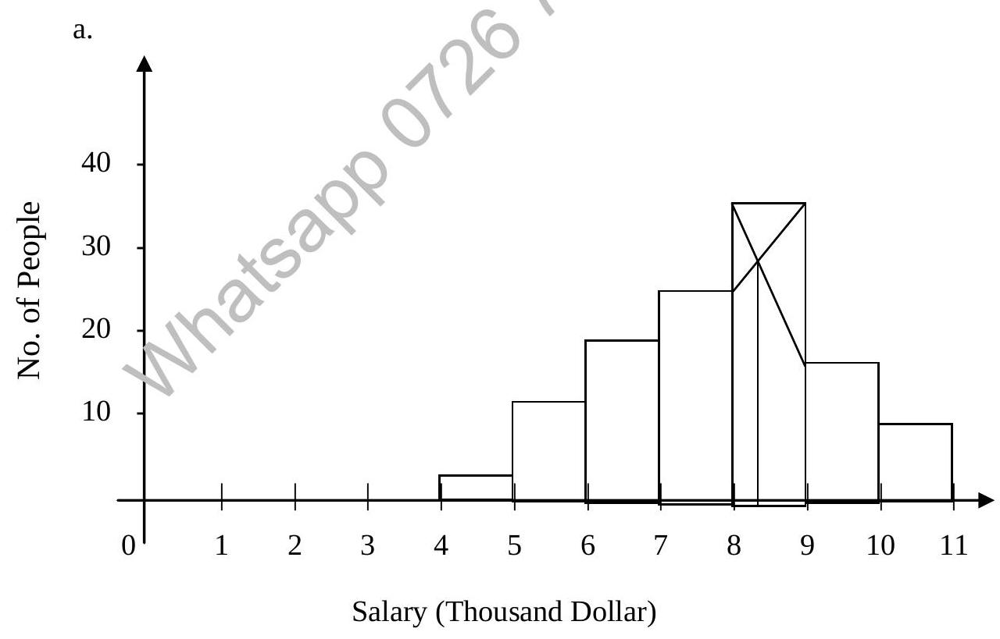

Chapter 12 : Statistics (Continued)
12.5 Three Statistical Quantities of Central Tendency (Continued)
12.5.3 The Mode (Continued)
The mode of a set of number is that value which occurs with the greatest frequency, i.e. it is the most common value. The mode may not exist, and even if it does exist, it may not be unique.
Example:
The set 2, 2, 5, 7, 9, 9, 9, 10, 10, 11, 12, 18 has a mode = 9.
Example:
The set 3, 5, 8, 10, 12, 15, 16 has no mode.
A distribution having only one mode is called uni-modal.
In the case of a grouped data where a frequency curve has been constructed to fit the data, the mode will be the value (values) of X with the highest frequency.
From a frequency distribution or histogram the mode can be obtained using the following formula.
where
- $L_1$ = Lower class boundary of modal class (i.e. class containing the mode)
- $\Delta_1$ = Excess of modal frequency over frequency of previous lower class.
- $\Delta_2$ = Excess of modal frequency over frequency of next higher class.
- $c$ = Size of modal class interval.
Mode of grouped data may also be estimated from Histogram as shown in Figure 12-1.
Example:
Estimate the mode of the following distribution of salaries of employees in a computer company:
| Salary ($) | No. of people |
|---|---|
| 4000 - 4999 | 2 |
| 5000 - 5999 | 12 |
| 6000 - 6999 | 19 |
| 7000 - 7999 | 25 |
| 8000 - 8999 | 36 |
| 9000 - 9999 | 17 |
| 10000 - 10999 | 9 |
- By graphical means; and
- By calculation means.
Solution:
Figure 12-2 : Histogram
The category 8000-8999 has the highest frequency (36), it is called the modal class. The estimated mode is in this category (or class). It can be estimated graphically as shown in Figure 12-2.
b. Mode can be estimated using the formula.
$L_1 = 7999.5$ (Lower boundary of modal class)
$\Delta_1 = 36 - 25 = 11$ (Difference with previous class frequency)
$\Delta_2 = 36 - 17 = 19$ (Difference with next class frequency)
$c = 1000$ (Class interval size)
12.6 Dispersion and Variation
The degree to which numerical data tend to spread about an average value is called the variation or dispersion of the data. Various measures of dispersion or variation are available.
12.6.1 Mean Deviation
The mean deviation or average deviation of a set of N numbers $X_1, X_2, \ldots, X_N$ is defined by:
Example:
Find the mean deviation of the set of numbers 2, 3, 6, 8, 11.
Solution:
Arithmetic Mean $\bar{X} = \frac{2+3+6+8+11}{5} = 6$
If $X_1, X_2, \ldots, X_K$ occur with frequencies $f_1, f_2, f_3, \ldots, f_k$ respectively, the mean deviation can be written as :
where $N = \sum_{j=1}^{K} f_j = \sum f_j$
This form is useful for grouped data where the $X_j$'s represent class marks and the $f_j$'s are the corresponding frequencies.
12.6.2 The Standard Deviation
The standard deviation of a set of N numbers $X_1, X_2, \ldots, X_N$ is denoted by SD (or s or σ) and is defined by
If $X_1, X_2, \ldots, X_K$ occur with frequencies $f_1, f_2, \ldots, f_K$ respectively, the standard deviation can be written as:
where $N = \sum_{j=1}^{K} f_j = \sum f$
This form is useful for grouped data.
12.6.3 The Variance
The variance of a set N numbers $X_1, X_2, \ldots, X_N$ is defined as the square of the standard deviation and is thus given by
If $X_1, X_2, \ldots, X_K$ occurs with frequencies $f_1, f_2, \ldots, f_K$ respectively, the variance can be written as:
where $N = \sum_{j=1}^{K} f_j = \sum f$
This form is useful for grouped data.
Example:
Find the standard deviation and variance of the following set of numbers: 12, 6, 7, 3, 15, 10, 18, 5
Arithmetic mean $\bar{X} = \frac{\sum X}{N} = \frac{12+6+7+3+15+10+18+5}{8} = \frac{76}{8} = 9.5$
Variance = (SD)2 = 23.75
Example:
Find the standard deviation of the weights of the 100 male students at Informatics Computer School as shown in the table below.
| Mass (Kg) | Class Mark (X) | Frequency (f) | fX | fX2 |
|---|---|---|---|---|
| 60-62 | 61 | 5 | 305 | 18605 |
| 63-65 | 64 | 18 | 1152 | 73728 |
| 66-68 | 67 | 42 | 2814 | 188538 |
| 69-71 | 70 | 27 | 1890 | 132300 |
| 72-74 | 73 | 8 | 584 | 42632 |
| N = Σf = 100 | ΣfX = 6745 | ΣfX2 = 455803 |
Mean $\bar{X} = \frac{\sum fX}{N} = \frac{6745}{100} = 67.45$ kg
Points to Remember (Statistics)
- To use some guidelines to organise data into frequency distribution table (grouped data).
- Use line graph, bar chart, pictograph, pie chart, histogram and cumulative frequency diagram to display data in graphical form.
- Calculate mean, median and mode as measures of central tendency.
| Measure | Raw Data | Grouped Data |
|---|---|---|
| Mean | $\frac{\sum X}{N}$ | $\frac{\sum fX}{\sum f}$ |
| Median | Take the middle data from a sorted list. | 1. Use cumulative frequency diagram. 2. Use formula: $L_1 + \left( \frac{N/2 - (\sum f)_1}{f_{\text{median}}} \right) \times c$ |
| Mode | Take the data that appear most frequently. | 1. Use histogram. 2. Use formula: $L_1 + \left( \frac{\Delta_1}{\Delta_1 + \Delta_2} \right) \times c$ |
- Calculate standard deviation and variance as measures of spread or dispersion.
| Measure | Raw Data | Grouped Data |
|---|---|---|
| Standard Deviation | $\sqrt{\frac{\sum X^2}{N} - \left(\frac{\sum X}{N}\right)^2}$ | $\sqrt{\frac{\sum fX^2}{\sum f} - \left(\frac{\sum fX}{\sum f}\right)^2}$ |
| Variance | (Standard Deviation)2 | (Standard Deviation)2 |
- Use time series graph to observe the trend of a variable over time.
- Use scatter diagram to observe the correlation between two variables.
12.7 Past Years Questions
Given the following collection of numbers 2, 4, 5, 5, 6, 7.
- Calculate the mean (round to 1 decimal place).
- Calculate the mode.
- Calculate the median.
a. What is mean?
b. What is mode?
A grade of 1 to 5 could be obtained in an examination and the actual scores were distributed as follows:
| Grade | 1 | 2 | 3 | 4 | 5 |
|---|---|---|---|---|---|
| No. of Candidates | 4 | 3 | 9 | 2 | 2 |
Find:
- the mean;
- the median;
- the mode.
Given a series of numbers: 0, 6, 8, 12, 25, and the mean of these numbers is 15:
- Find C.
- Find the median.
Given the following collection of integers, where X is unknown:
3, 2, 7, 2, 2, 4, 5, 2, 4, 6, X
- What can be said about the median?
- What can be said about the mode? [2]
- What can be said about the mean? [2]
- If the mean was given as 4, what would be the value of X?
Ten students have taken an examination and been given their marks. Student X will not say what his mark is, but the other students have marks of 2, 4, 6, 6, 7, 7, 7, 8 and 10. The teacher has told everyone that the mean mark was 6.
- What mark did student X obtain?
- What mark is the median?
- What mark is the mode?
The heights of a group of students from a secondary school are distributed as follows:
| Height(m) | Frequency |
|---|---|
| 1.4 <= ht <= 1.5 | 5 |
| 1.5 <= ht <= 1.6 | 30 |
| 1.6 <= ht <= 1.7 | 36 |
| 1.7 <= ht <= 1.8 | 40 |
| 1.8 <= ht <= 1.9 | 8 |
| 1.9 <= ht <= 2.0 | 1 |
- Draw a histogram of this data on graph paper.